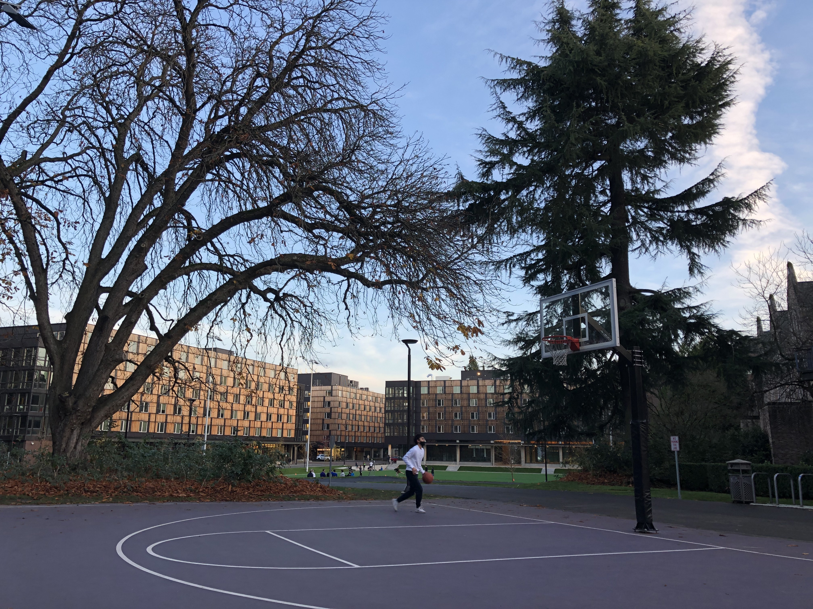
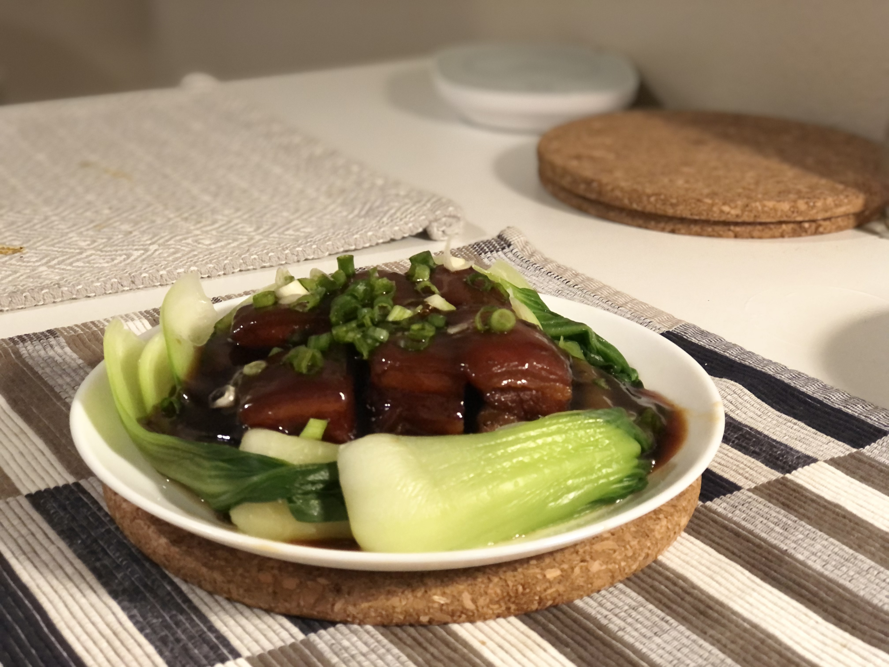

About me
Music
I love classical music and jazz music. When I code, I let the pieces flow through me, and I concentrate better. I play the guitar, and I'm trying to relearn piano recently.
Sports
I am a huge fan of basketball. So much so, that I can pretty much call out the majority of NBA players, and even NBA plays. NBA sport statistics has always fascinated me, and even pushed me to complete a full stack web project related to it. Go check it out in the Projects section!
Foodie
Prior to coming to the US, I didn't cook much. During COVID and studying at home, I picked up cooking as a hobbie, and was astonished to find out, I am pretty good at it. Now, I enjoy cooking for friends when they come over for meals, and often research new recipes to try out!